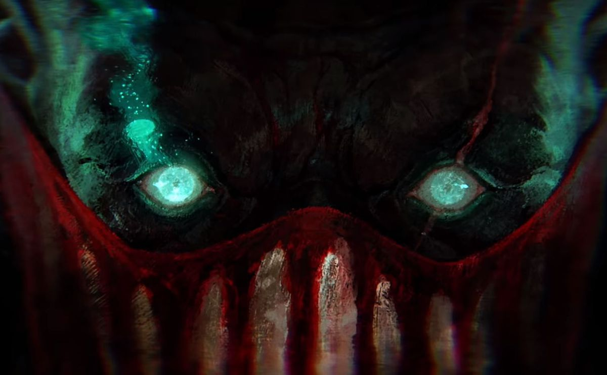
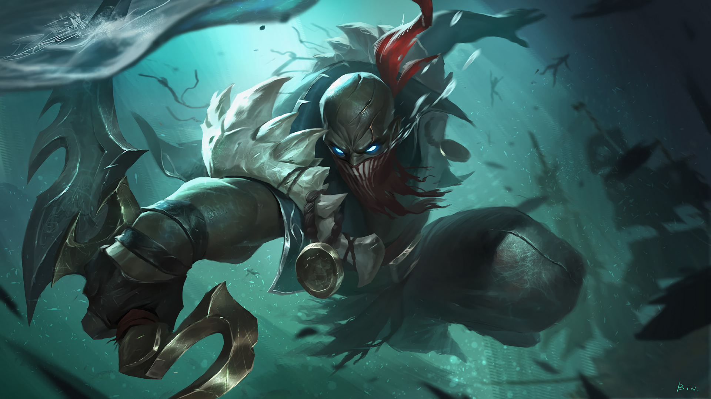

PLAYING AS PYKE
As Pyke, you’re a cutthroat who cripples and kills all who cross you—which is everyone you come across. Start by stalking your victims with a Ghostwater Dive, lurking right at the edge of their vision. Resurface with a swift Bone Skewer to butcher multiple enemies at point-blank range. Hold the blade a little longer to harpoon just one foe instead, reeling them in to your territory before gutting them like a fish.
Get even more aggressive by rushing foes with a Phantom Undertow, leaving opponents paralyzed with fear as the rest of your crew closes in. When you smell blood in the water, finish the job with Death from Below to clinch the kill and cross multiple names off your list.

PLAYING WITH PYKE
They say death is the best crowd control, and Pyke makes a great argument. In lane he’s constantly angling for the all-in, using hooks and stuns to set up kills. While he can maim foes from any spot in a fight, he’s better suited to a flank than the frontline, so expect him to make more picks than peels. And don’t worry if he ends up doing lots of murdering himself—there’s extra gold for whoever assists in his vendetta.
Pyke likes to kill, but he needs help with his homicides. Injuring opponents by trading and poking is key before Pyke drags them under. Even when he catches an enemy alone, he’ll need to take a couple stabs at his target—enough time for their friends to intervene. His high mobility is also offset by low survivability: Pyke is easily punished if he dives deep for a kill he can’t quite finish. The Ripper didn’t get his name by playing passive, though, so be ready for violence at any moment.